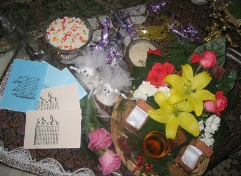

|
|

عروس کمپینی: شروع زندگی مشترک با شروط کامل ضمن عقد و دفترچه های تغییر قوانین تبعیض آمیز
يكشنبه23 اردیبهشت 1386
یکی از اعضای کمپین یک میلیون امضاء، بدون مهریه اما با شروط کامل ضمن عقد و تعهد اخلاقی از داماد برای جمع آوری امضاء به منظور تغییر قوانین تبعیض آمیز، زندگی مشترک خود را با دفترچه های تغییر قوانین کمپین یک میلیون امضاء آغاز کرد. با این امید که بعد از او عروسان کمپینی و غیرکمپینی با توجه به تغییر قوانین، لازم به شروط ضمن عقد نداشته باشند، دختران 9 ساله مجازات نشوند، دیه و شهادت اش برابر شود و.... _ مبارک است.